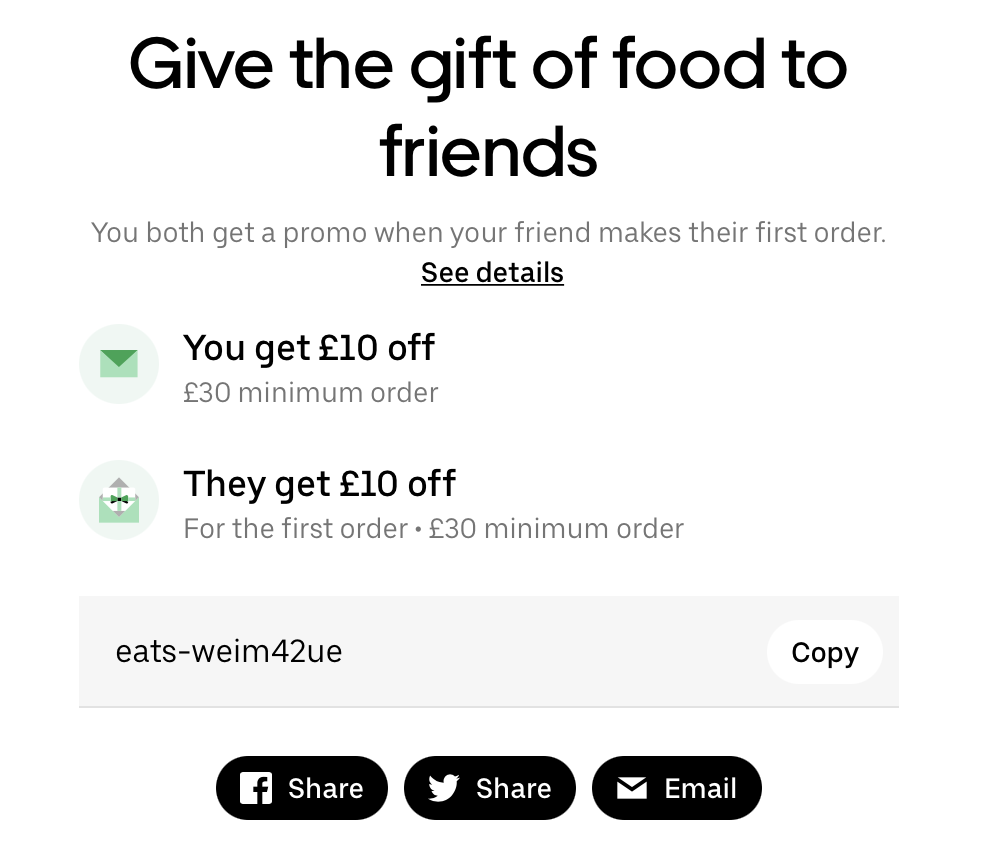
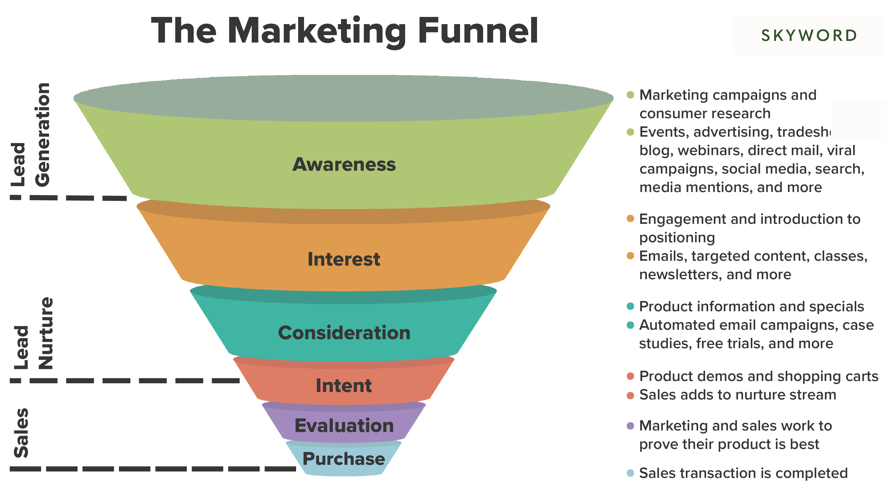

Class 3 Workshop: Break-Even Analyses and Customer Lifetime Value
1 Recap of BEA
1.1 Objective of Marketing Process

- Marketing activities need to create value for the company
1.2 Break-Even Analyses
Any marketing activity (in fact, any business activity)
incurs some marketing expense/investment costs
generates benefits for the company (e.g., incremental sales; higher customer retention rate)
The core idea of a break-even analysis is to compare the benefit with the cost
- BEA is sometimes called cost-benefit analysis.
1.3 Break-Even Quantity
- For a marketing campaign with fixed marketing expenditure with short-term impacts, we can compute BEQ to evaluate its feasibility
- BEQ calculates the number of incremental units the firm needs to sell to cover the cost of the marketing campaign.
- Incremental because we are comparing with status quo
1.4 Break-Even Quantity Formula
Contribution Margin Per Unit = Price Per Unit - Variable Costs Per Unit
Measures how much money each additional sale “contributes” to the company’s total profits.
contribution margin rate1 = contribution margin per unit / price per unit
Break-Even Quantity = Marketing Expenditure / Contribution Margin Per Unit
Compare BEQ with estimated incremental sales to finish break-even analyses
- Marketing costs are usually easy to obtain through budgeting
- Incremental sales will need to be estimated through causal inference tools (i.e., the causal impact of influencer marketing on sales)
If the estimated incremental sales can exceed BEQ, approve the marketing campaign
1.5 PineApple BEQ
- Assign values to R objects based on case background information
quantityis 10 million; we use 10 for brevity- Sales refers to quantity sales by industry practice
- Revenue or revenue sales refers to monetary sales
COGSis the variable costs per unit in the BEQ formula- Used in both percentage or value terms interchangeably.
- R&D costs are sunk costs
- Should sunk costs be considered in a BEA for a marketing campaign?
1.6 PineApple BEQ Step 1
- Compute the contribution margin per unit
# Following the definition
# contribution margin per unit = price - variable cost
contribution_margin_per_unit <- price - price * COGS
contribution_margin_per_unit[1] 240# equivalently, contribution margin rate = 1 - COGS
# contribution margin per unit = price * contribution margin rate
contribution_margin_per_unit <- price * (1 - COGS)
contribution_margin_per_unit[1] 2401.7 PineApple BEQ Step 2
- Compute the break-even quantity
# numerator is the marketing expense
# denominator is the the contribution margin per unit
BEQ <- endorsement_fee / contribution_margin_per_unit
BEQ[1] 0.2083333The marketing costs, i.e., the endorsement fee, is 50 million pounds
Each incremental sale makes profit by 240 pounds
=> This means, the influencer marketing campaign needs to increase sales by at least BEQ (0.2083333 million) units, in order for the company not to lose any money
1.8 PineApple BEQ Step 3
- Compare BEQ with estimated incremental sales to finish break-even analyses
- In the case study, “the team estimates that such an influencer campaign can increase the total sales within the next financial year by 2.5%.”
- The comparison base is the original estimated sales without any marketing campaign, so the incremental units of sales would be
quantity * 0.025
- The comparison base is the original estimated sales without any marketing campaign, so the incremental units of sales would be
We need to sell
0.2083333million units to break-even (not earn or lose money), but we can in fact sell 0.25 million, which is more than the BEQ.The influencer marketing campaign is profitable and should be approved.
1.9 NPV
- If the benefits of the marketing campaign come in longer periods, we need to consider the time value of money and use NPV to evaluate the profitability
\[ N P V=-I_{0}+\frac{CF_{1}}{(1+k)}+\frac{C F_{2}}{(1+k)^{2}}+\cdots+\frac{C F_{n}}{(1+k)^{n}} \]
1.10 Discount Rate and Discount Factor
\(k\) is called discount rate, which reflects the time value of money
The same £1 today is more valuable than £1 tomorrow
e.g., if interest rate is 10% annually, then £1 today is worth £1.1 a year later
\(\frac{1}{1+k}\) is called discount factor, which is a factor to discount the future CFs to today
In each period, we discount the future CF by multiplying it with the discount factor
CF received 1 month later \(CF_1\) is worth \(\frac{1}{1+k} * CF_1\) today
CF received 2 months later \(CF_2\) is worth \(\frac{1}{(1+k)^2} * CF_2\) today
For a company, \(k\) is often estimated by the finance department, which is usually the Weighted Average Cost of Capital, or WACC
1.11 PineApple NPV: Step 1
- Compute the sequence of monthly cash flows
First, we compute the incremental sales percentage for each month, relative to the 10 million.
This is a 12-element vector, each element representing the incremental sales percentage.
incremental.sales.percentage_1stmonth <- 0.003
incremental.sales.percentage_next11months <- rep(0.002,11)
# incremental profit each month
vector_incremental.sales.percentage_12months <-
c(incremental.sales.percentage_1stmonth,
incremental.sales.percentage_next11months)
vector_incremental.sales.percentage_12months [1] 0.003 0.002 0.002 0.002 0.002 0.002 0.002 0.002 0.002 0.002 0.002 0.002- Interpretation: 0.003 means that, the first month incremental sales units would be 0.3% of the baseline quantity.
1.12 PineApple NPV: Step 1
- Next, we multiply the incremental sales percentage with quantity, to get the incremental sales in terms of units for each month.
vector_incremental.sales.units_12months <-
vector_incremental.sales.percentage_12months *
quantity
vector_incremental.sales.units_12months [1] 0.03 0.02 0.02 0.02 0.02 0.02 0.02 0.02 0.02 0.02 0.02 0.02- Interpretation: 0.03 means that, the first month incremental sales units would be 0.03 million units.
1.13 PineApple NPV: Step 1
- Lastly, we multiply the incremental quantity sales with the contribution margin per unit, to get the total contribution margins (incremental profits) for each month, i.e., the CF
[1] 7.2 4.8 4.8 4.8 4.8 4.8 4.8 4.8 4.8 4.8 4.8 4.8- Interpretation: 7.2 means that, the first month incremental net profits would be 7.2 million pounds.
1.14 PineApple NPV: Step 2
- Compute the sequence of discount factors
# divide annual wacc to get monthly wacc
monthly_WACC <- 0.1/12
# monthly wacc is the k in the NPV formula
k <- monthly_WACC
k[1] 0.008333333[1] 0.9917355# Generate a geometric sequence vector of discounted CFs for 12 months
vector_discount_factor <- discount_factor^c(1:12)
vector_discount_factor [1] 0.9917355 0.9835394 0.9754110 0.9673497 0.9593551 0.9514265 0.9435635
[8] 0.9357654 0.9280319 0.9203622 0.9127559 0.9052124- Interpretation: 0.9917355 means that, £1 1 month later is worth £0.992 today; 0.9052124 means that, £1 12 month later is worth £0.905 today.
1.15 PineApple NPV: Step 3
- Compute the NPV
- Multiply CF vector with discount factor vector, to get the discounted CF vector
1.16 PineApple NPV: Step 3
- use function sum() to get the sum of all elements in a vector. That is, the sum of discounted cash flows in all 12 months.
- We need to subtract the endorsement fee, which is the marketing expense, to get the net present value
1.17 Customer Lifetime Value
CLV is a break-even analysis from the perspective of a single customer, which considers a customer as an asset to the company that generates future cashflows
incurs customer acquisition costs (CAC)
customer generates profits for the company in each period
customer churns at some point in time

1.18 Customer Acquisition Costs
- The total marketing costs to acquire a new customer

1.19 CLV: Formula
\[ \mathrm{CLV} = - CAC + \sum_{t=1}^{N} \frac{CF_t * r^{(t-1)}}{(1+k)^{t}} \]
where \(CF_t = M_t - c_t\)
- \(r\) is the average annual retention rate; \(r^{(t-1)}\) is the cumulative retention rate in year \(t\)
- \(N\) is the number of years over which the relationship is calculated
- \(M_{t}\) is the margin the customer generates in year \(t\)
- \(c_{t}\) is the expected cost of marketing communications or promotions targeted to the customer in year \(t\)
- \(k\) is the rate for discounting future cash flows
2 Case Study: i-basket CLV
2.1 Situation Analyses: i-basket
Company
Customer
Collaborators
Competitors
Context/Climate
2.2 Step 1: Determine time unit of analysis
- Time unit of analysis
[…] (find info in the case study)
- When should we use monthly analysis?
2.3 Step 2: Determine number of years
- \(N\): the number of years over which the customer relationship is assessed
- […] (find info in the case study)
2.4 Step 3: Compute profit margin for each period
\(CF = M - c\): gross profit each year
- most customers paid the $99 annual membership fee
- 40 times each year; each time $100
2.5 Step 3: Compute profit margin for each period
- profit margin 7% (COGS 93%)
- variable delivery costs each order
2.6 Step 3: Compute profit margin for each period
- the annual CF from customers CF
2.7 Step 4: Compute sequence of retention rate
- \(r\): retention rate
- […] (find info in the case study)
2.8 Step 5: Compute sequence of discount factors
- \(k\): the discount rate
- […] A yearly discount rate of 10%
- […] The team decided to take a conservative approach whereby all profits are booked at the end of year.
- All profits earned per customer in year 1 need to be discounted once, the profits earned in year 2 need to be discounted twice, and so on
2.9 Step 6: Compute customer acquisition costs
- CAC = total costs for customer ad clicks + total costs of $15 promo + total costs of free deliveries

2.10 Step 6: Compute customer acquisition costs
6.1 Total costs for customer clicks
- […] a fifth of those who clicked on an ad were willing to give the service a try
- […] 20% of those that signed up for the free trial ended up becoming members
- How many customers need to click the ad to get 1 new customer?
- Total costs for customer clicks
2.11 Step 6: Compute customer acquisition costs
- CAC = total costs for customer ad clicks + total costs of $15 promo + total costs of free deliveries
6.2 total costs of $15 promo for first order each trier customer
- How many customers need to try the service to get 1 new customer?
- What is the total promo cost for these “trier” customers’ first order?
2.12 Step 6: Compute customer acquisition costs
- CAC = total costs for customer ad clicks + total costs of $15 promo + total costs of free deliveries
6.3 total costs from free deliveries
- Assume two visits, the delivery costs for each visit
- We also make a profit from each trier
- Net delivery costs for each trier
2.13 Step 6: Compute customer acquisition costs
- CAC = total costs for customer ad clicks + total costs of $15 promo + total costs of free deliveries
2.14 Step 7: Compute CLV
- Compute the CLV based on the CLV formula (Table A)
- 7.1 Revenues, variables costs, and profit for the next 5 years
- 7.2 Apply retention rate
- 7.3 Apply discount factor
- 7.4 Compute CLV by summing up future expected profits
3 CLV for Marketing Decisions
3.1 CLV as a Key Management Tool

We can use CLV as the key managerial tool for evaluating different marketing initiatives!
3.2 Discussion
- How important is it for i-basket to measure CLV? Can you think of other companies or industries where CLV is particularly relevant?
- Conduct sensitivity analyses
- what assumptions have we made here? Are these assumptions sensitive to different values?
- From our analyses, what suggestions would you offer to i-basket in order to improve its customer profitability? How are you going to evaluate the feasibility of your proposal?
- acquisition/development/retention
3.3 Exercise
How much annual membership fee should the company charge to break even?
The company is looking to develop a personalized recommendation system that can increase the average shopping basket to $150. Compute the upper bound for the company’s investment in developing the algorithm in order to break even? Assume the company has 10,000 customers at this moment.
Footnotes
It’s important to infer percentage/absolute terms from the context.↩︎